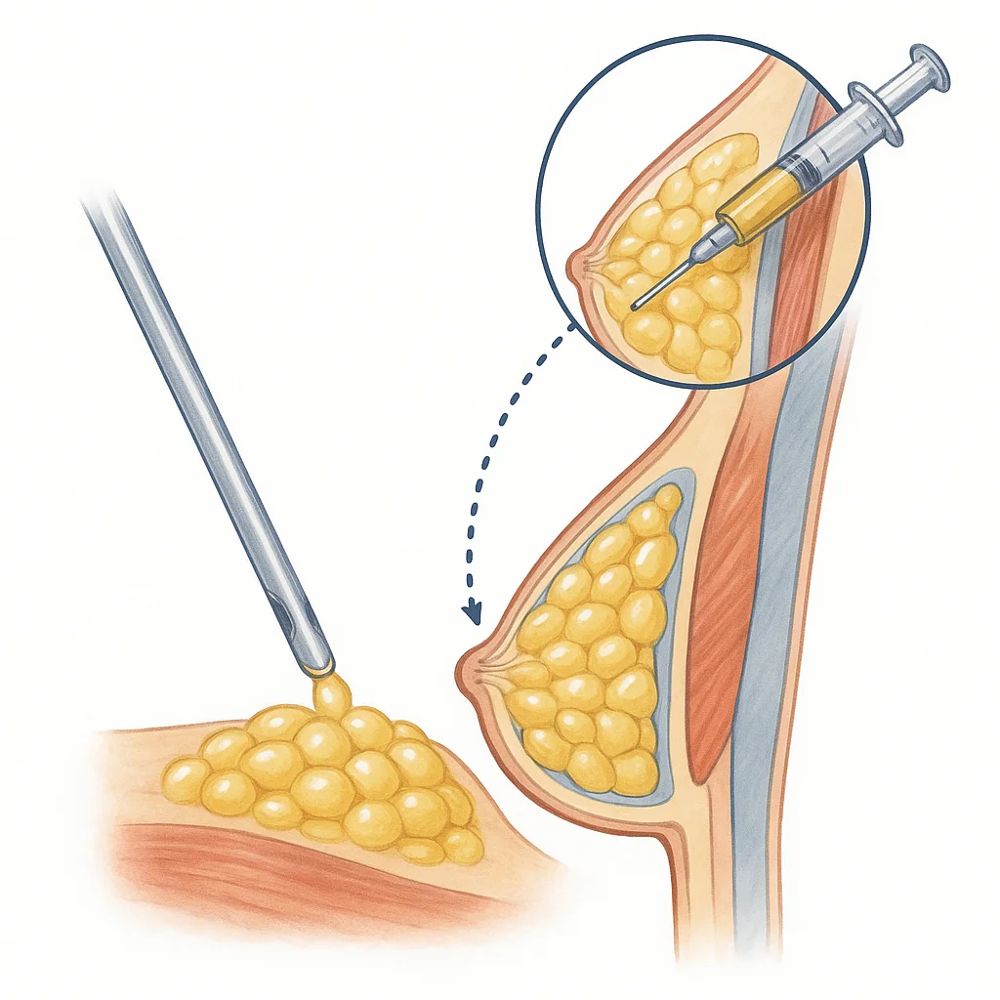
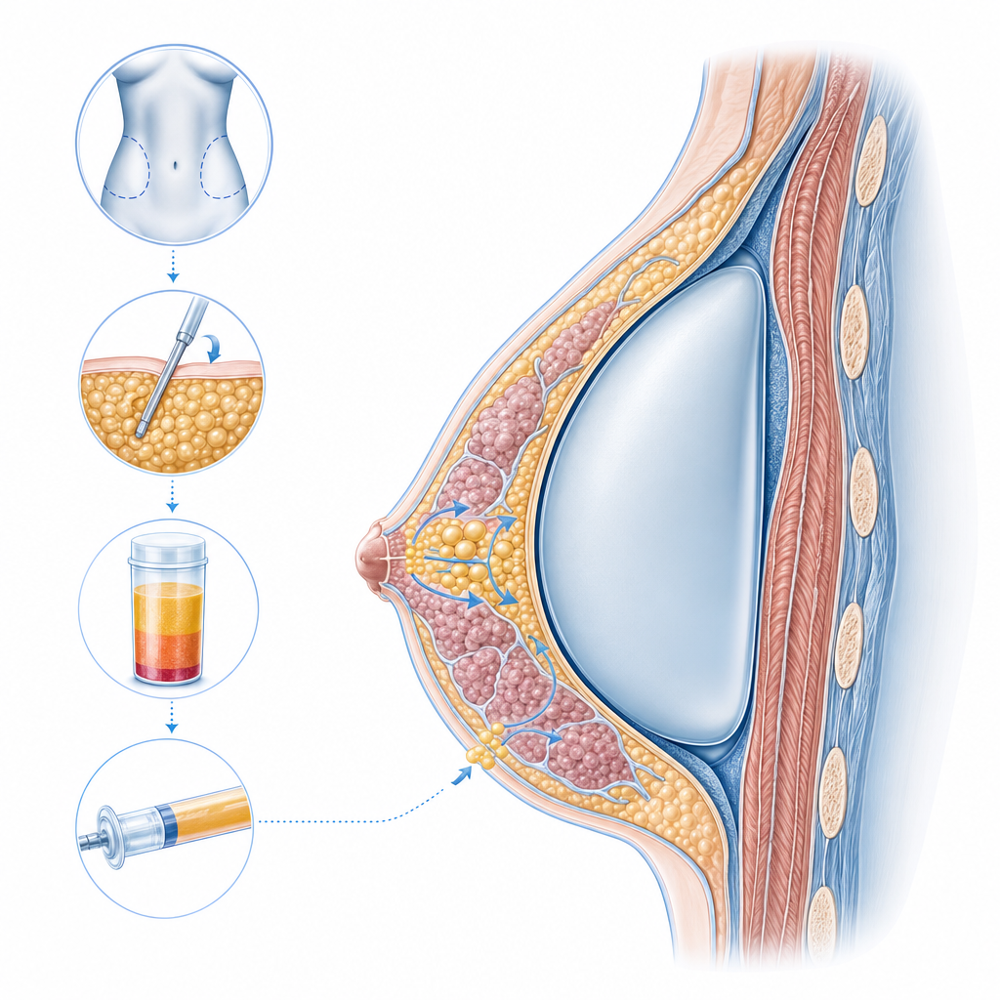
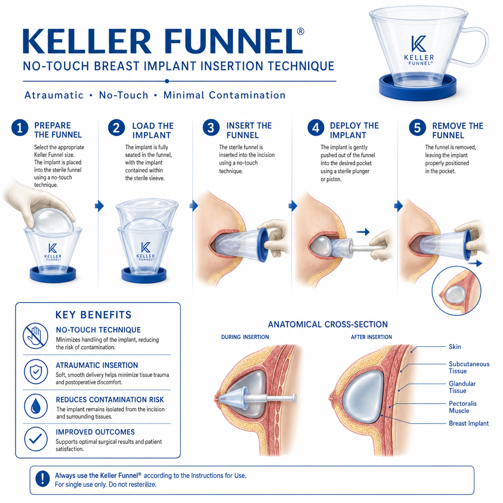

Modernste Implantate, schonende Techniken und ein erfahrener Facharzt für ästhetisch-plastische Chirurgie. Ihr Weg zu einer harmonischen, natürlich aussehenden Brustform beginnt mit einem persönlichen Gespräch.
100% kostenlos · Unverbindlich · Antwort innerhalb von 48h

„Absolute Empfehlung! Er nimmt sich wirklich Zeit und geht auf das Anliegen ein. Als Patientin fühlt man sich verstanden – er findet gezielt die passende Methode, abgestimmt auf Wunsch und persönliche Situation."
– Verifizierte Patientin · Jameda Bewertung 2024
Eine Brustvergrößerung ist mehr als ein ästhetischer Eingriff – sie kann Ihr Selbstbewusstsein und Ihr gesamtes Wohlbefinden grundlegend verändern.
Bikinis, Kleider und Oberteile betonen nicht Ihre Weiblichkeit. Sie wünschen sich endlich ein Dekolleté, in dem Sie sich rundum wohl fühlen – egal ob im Alltag oder am Strand.
Nach dem Stillen hat sich Ihre Brust verändert – Volumen und Straffheit sind verloren gegangen. Sie sehnen sich nach Ihrem früheren Körpergefühl und einer harmonischen Brustform zurück.
Ob von Natur aus kleine Brüste oder eine sichtbare Asymmetrie – Sie wünschen sich ein harmonisches, proportional ausgewogenes Erscheinungsbild, das zu Ihrem Körper passt.
Persönliche Beratung mit echten Ergebnisbeispielen
Welche Methode für Sie am besten geeignet ist, besprechen wir gemeinsam im persönlichen Beratungsgespräch. Hier ein Überblick über die drei Möglichkeiten.
 Klassisch
Klassisch
Die bewährte Methode für zuverlässige, planbare Ergebnisse. Silikon-Implantate der neuesten Generation fühlen sich natürlich an, sehen natürlich aus und sind langfristig sicher. Je nach Anatomie und Wunsch können Sie Ihre Brustgröße um ein bis mehrere Körbchengrößen vergrößern lassen.
Im Beratungsgespräch können Sie verschiedene Implantattypen anfassen und vergleichen. Massud Hosseini berät Sie individuell zu Form (rund vs. anatomisch), Oberfläche und Platzierung (über oder unter dem Brustmuskel) – für ein Ergebnis, das perfekt zu Ihrem Körper passt.

100% NatürlichDer natürlichste Weg zur Brustvergrößerung: Körpereigenes Fett wird per schonender Liposuktion (z.B. aus Bauch, Hüften oder Oberschenkeln) gewonnen, aufbereitet und gezielt in die Brust injiziert. Das Ergebnis fühlt sich vollkommen natürlich an – ohne Fremdkörper im Körper.
Ideal für Patientinnen, die eine dezente Vergrößerung um circa eine halbe bis eine Körbchengröße wünschen und gleichzeitig an einer anderen Körperstelle etwas weniger Volumen möchten. Ein doppelter Gewinn für Ihre Silhouette.

Das Beste aus beidenDie Kombination aus Implantat und Eigenfett vereint die Vorteile beider Methoden: Das Implantat gibt Volumen und Form, das Eigenfett sorgt für weiche, natürliche Übergänge – besonders am Dekolleté und an den Rändern. Das Ergebnis: Ein Busen, der sich so natürlich anfühlt, wie er aussieht.
Besonders empfehlenswert bei sehr schlanken Patientinnen mit wenig Eigengewebe, bei sichtbaren Implantaträndern oder bei einer bestehenden Asymmetrie, die mit dem Implantat allein nicht perfekt korrigiert werden kann.
Wir arbeiten ausschließlich mit CE-zertifizierten Premium-Herstellern, die höchste Sicherheits- und Qualitätsstandards erfüllen.
Deutsches Qualitätsimplantat. Besonders bewährt durch jahrzehntelange klinische Studien. Verschiedene Formen und Oberflächen verfügbar.
Made in GermanyErgonomische Implantate der neuesten Generation. Passen sich der natürlichen Brustform an – im Stehen und im Liegen. Ultraweiche Silikon-Oberfläche.
ErgonomischWeltweit führender Hersteller (Johnson & Johnson). Millionenfach bewährt, formstabiles MemoryGel für ein besonders natürliches Tastgefühl.
WeltmarktführerDas leichteste Brustimplantat der Welt – bis zu 30% leichter. Weniger Belastung für das Gewebe, geringeres Risiko für langfristige Erschlaffung.
UltraleichtJe nach Anatomie und Implantatwahl empfehlen wir die optimale Schnittführung für ein möglichst unauffälliges Ergebnis.
Der Schnitt liegt in der natürlichen Falte unter der Brust und ist nach der Heilung kaum sichtbar. Maximale Kontrolle bei der Implantatplatzierung.
Der Schnitt verläuft am Rand des Warzenhofs, wo der Farbübergang die Narbe auf natürliche Weise kaschiert. Besonders bei gleichzeitiger Korrektur des Warzenhofs.
Der Schnitt liegt in der Achselhöhle – die Brust selbst bleibt völlig narbenfrei. Modernste endoskopische Technik für präzise Ergebnisse.
Die No-Touch-Technik ist ein entscheidender Fortschritt in der modernen Brustchirurgie. Dabei wird das Implantat mithilfe eines speziellen Trichters – dem Keller-Funnel – kontaktfrei in die vorbereitete Tasche eingesetzt. Das minimiert das Risiko von Kontamination und senkt die Kapselfibrose-Rate deutlich.
Zusätzlich ermöglicht der Keller-Funnel das Einsetzen größerer Implantate durch kleinere Öffnungen – für kürzere Narben und eine schnellere Heilung.

„Es gibt kaum etwas Schöneres, als zu sehen, wie unsere Patientinnen mit neuem Selbstvertrauen aus der Behandlung gehen. Mein Ziel ist immer ein Ergebnis, das so natürlich aussieht, dass es wie Ihr eigener Körper wirkt."
Facharzt für Plastische & Ästhetische Chirurgie · Chefarzt KÖ-Aesthetics
Von der ersten Beratung bis zum fertigen Ergebnis: So begleiten wir Sie durch den gesamten Prozess – transparent, persönlich und auf Augenhöhe.
In vertrauensvoller Atmosphäre nehmen wir uns ausführlich Zeit für Ihre Wünsche und Fragen. Wir besprechen Ihre Vorstellungen, zeigen Ihnen echte Vorher-Nachher-Beispiele und beraten Sie zu den verschiedenen Methoden. Sie haben die Möglichkeit, unterschiedliche Implantate in die Hand zu nehmen und zu vergleichen.
⏱ Ca. 45–60 Minuten · 100% kostenlos & unverbindlichMassud Hosseini plant Ihren Eingriff persönlich: Form, Größe und Positionierung werden exakt auf Ihre Körperproportionen, Hautbeschaffenheit und Wünsche abgestimmt. Mithilfe einer 3D-Simulation können Sie Ihr mögliches Ergebnis vorab sehen.
📐 Maßgeschneiderte Planung für Ihre AnatomieAlle Details zur Operation werden besprochen, offene Fragen geklärt. Sie erhalten individuelle Empfehlungen für die Zeit vor und nach dem Eingriff – Medikamente, Ernährung, Kompressionskleidung. Damit Sie bestens vorbereitet und mit einem guten Gefühl in den OP-Tag gehen.
Unter Vollnarkose wird das Implantat mit der No-Touch-Technik (Keller-Funnel) und der Minimal-Scar-Methode präzise eingesetzt. Die bewährte Technik sorgt für minimales Infektionsrisiko, weniger Schwellungen und kaum sichtbare Narben von nur ca. 3 cm.
🏥 Modernste OP-Räume im PRADUS Medical Center DüsseldorfNach ca. 7–14 Tagen sind Sie wieder gesellschaftsfähig. Unser Team begleitet Sie engmaschig durch den gesamten Heilungsverlauf mit mehreren Kontrollterminen. Nach 4–6 Wochen können Sie leichten Sport wieder aufnehmen, nach 6–8 Wochen sind keine Einschränkungen mehr nötig.
💬 Persönliche Erreichbarkeit bei Fragen – auch nach der OPDas endgültige Ergebnis ist nach ca. 3–6 Monaten sichtbar, wenn alle Schwellungen vollständig abgeklungen sind. Viele Patientinnen berichten von einem ganz neuen Körpergefühl, mehr Selbstbewusstsein und einer gesteigerten Lebensqualität.
Der erste Schritt zu Ihrem neuen Körpergefühl
Echte Erfahrungen von verifizierten Patientinnen – ungeschönt und direkt.
„Ich habe mir vor einem Monat eine Brustvergrößerung mit Straffung durchführen lassen. Das Ergebnis ist jetzt schon super schön! Massud Hosseini hat individuell geschaut, was zu meinem Körper passt – sein Auge für Ästhetik ist hervorragend."
„Der Empfang war sehr freundlich. Massud Hosseini hat sich ausführlich Zeit genommen und ging auf jede Frage ein. Er zeichnete auf meiner Brust, sodass ich mir bildlich gut vorstellen konnte, wie es nach der OP aussehen wird. Ich fühle mich sehr gut aufgehoben."
„Super kompetenter Arzt – man fühlt sich gut aufgehoben und verstanden. Nimmt sich Zeit für seine Patienten und erklärt einem alles bis ins kleinste Detail. Ich bin unglaublich dankbar für diese Entscheidung."
„Absolute Empfehlung! Er nimmt sich wirklich Zeit und geht auf das Anliegen ein. Als Patientin fühlt man sich verstanden – er findet gezielt die passende Methode – abgestimmt auf Wunsch und persönliche Situation."
„Der Arzt meines Vertrauens – fachlich absoluter Profi und dabei unglaublich sympathisch. Die Gespräche mit ihm sind nicht nur informativ, sondern machen richtig Spaß. Ergebnis ist genau so geworden, wie ich es mir gewünscht habe."
„Ich habe mich zu jeder Zeit kompetent beraten gefühlt. Die Behandlung wurde zu meiner vollsten Zufriedenheit vorgenommen. Das Ergebnis ist wunderschön – fast keine blauen Flecken oder Schwellungen! Kann ich von Herzen empfehlen."

Facharzt für Plastische & Ästhetische Chirurgie · Chefarzt KÖ-Aesthetics Düsseldorf
Seit über 15 Jahren begleitet Massud Hosseini Patientinnen auf dem Weg zu ihrer Wunschbrust. Er verbindet chirurgische Präzision mit einem feinen ästhetischen Gespür – für Ergebnisse, die natürlich aussehen und sich natürlich anfühlen.
Seine Philosophie: Keine OP gleicht der anderen. Jede Patientin verdient eine individuelle Beratung, eine maßgeschneiderte Planung und ein Ergebnis, das zu ihrem Körper und ihrem Wunsch passt – nicht zu einer Norm.
Unsere moderne Praxisklinik befindet sich im 3. Obergeschoss des PRADUS Medical Center in Düsseldorf – zentral gelegen, mit stilvollen Behandlungs- und OP-Räumen sowie einer Atmosphäre, in der Sie sich wohlfühlen.
Wir nehmen uns Zeit, hören genau hin und beraten Sie ehrlich – auf Augenhöhe. Denn bei uns steht der Mensch im Mittelpunkt, nicht nur das Verfahren.
Hier finden Sie Antworten auf die wichtigsten Fragen rund um Ihre Brustvergrößerung. Für eine persönliche Beratung stehen wir Ihnen jederzeit gerne zur Verfügung.
Die Anzahl der Cups hängt von Ihrer natürlichen Brustgröße, der Hautbeschaffenheit und Ihren persönlichen Wünschen ab. Die meisten Patientinnen lassen sich um ein bis zwei Körbchengrößen vergrößern – z.B. von A auf C oder von B auf D. Im Beratungsgespräch finden wir gemeinsam die perfekte Größe für Ihre Proportionen.
Ja! Moderne Brustimplantate sind so konzipiert, dass sie natürlich aussehen und sich natürlich anfühlen. Insbesondere ergonomische Implantate (z.B. Motiva) passen sich im Stehen und Liegen der natürlichen Brustform an. Im Beratungsgespräch können Sie verschiedene Implantattypen anfassen und vergleichen.
Der Keller-Funnel ist ein spezielles Instrument zur besonders schonenden Einführung des Implantats. Der Kontakt zwischen Händen und Implantat wird minimiert, was das Risiko einer Kontamination und Kapselfibrose deutlich senkt. Zudem können größere Implantate durch kleinere Öffnungen eingesetzt werden – für kürzere Narben.
In der Regel ja. Bei der von uns am häufigsten verwendeten Methode (Schnittführung in der Unterbrustfalte) wird das Brustdrüsengewebe nicht berührt, sodass die Stillfähigkeit vollständig erhalten bleibt.
Dank moderner OP-Techniken und der No-Touch-Methode liegt das Risiko heute bei unter 3–4 Prozent. Durch die Verwendung hochwertiger Implantate und sorgfältiger Operationstechnik minimieren wir dieses Risiko auf ein absolutes Minimum.
Die meisten Patientinnen sind nach ca. 7–14 Tagen wieder gesellschaftsfähig. Leichter Sport ist nach 4–6 Wochen möglich, volle sportliche Belastung nach 6–8 Wochen. Das endgültige Ergebnis zeigt sich nach 3–6 Monaten.
Schwangerschaft und Stillzeit können Form und Größe Ihrer Brüste verändern. Für optimale Langzeitergebnisse empfehlen wir idealerweise eine Brustvergrößerung nach abgeschlossener Familienplanung. Ist das nicht gewünscht, lässt sich die Planung aber problemlos anpassen.
Die Kosten hängen von der gewählten Methode, dem Implantathersteller und dem individuellen Aufwand ab. Im persönlichen Beratungsgespräch erhalten Sie einen transparenten Kostenplan. Wir bieten zudem eine unkomplizierte Ratenzahlung an – sprechen Sie uns gerne darauf an.
Aufgrund des Heilmittelwerbegesetzes (HWG) dürfen wir Vorher-Nachher-Bilder nicht online veröffentlichen. Im persönlichen Beratungsgespräch zeigen wir Ihnen jedoch gerne anonyme Beispiele – damit Sie eine realistische Vorstellung vom möglichen Ergebnis bekommen.
Tragen Sie sich einfach ins Formular ein. Im nächsten Schritt können Sie direkt einen Termin im Online-Kalender auswählen.
Direkter Zugang zum Kalender
Bestätigung & Infos per E-Mail
In entspannter Atmosphäre, mit echten Beispielen
Schonend, präzise, individuell auf Sie abgestimmt
📞 Kein passender Termin dabei?
Dann ruft Sie ein Teammitglied innerhalb von 48h persönlich an, um offene Fragen zu klären und gemeinsam einen Termin zu finden – ganz entspannt und unverbindlich.